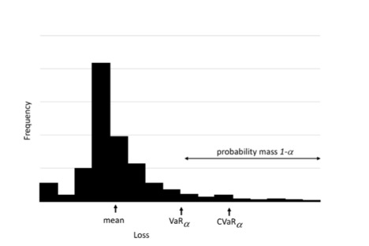

Risk-Based Stochastic Capital Budgeting using Conditional Value-at-Risk
Value-at-Risk (VaR) is widely used in finance to indicate percentiles of loss distributions. For instance, 95%-VaR is an upper estimate of losses that is exceeded with 5% probability. VaR is popular because it is simple and easy to interpret. However, VaR may have undesirable mathematical characteristics, such as a lack of subadditivity and convexity [4, 5].
An alternative percentile-based risk measure is Conditional Value-at-Risk (CVaR), which has more attractive properties, including subadditivity and convexity. CVaR, also called mean excess loss, mean shortfall, or tail VaR, is defined as the expected loss exceeding VaR. In general, CVaR is the weighted average of VaR and the losses exceeding VaR. In this section, we focus on using CVaR for the capital budgeting problem.
Definitions of VaR and CVaR
Let X be a random variable with cumulative distribution function F(z) = P\{X \le z\}. It can be useful to think of X as a loss (or more generally, a variable for which large values are undesirable). The VaR of X with confidence level \alpha (e.g., \alpha = 0.9) is:
(39)VaR_\alpha(X) = \min \{ z \mid F_X(z) \ge \alpha \}
If X is continuous, this is equivalent to VaR_\alpha(X) = F_X^{-1}(\alpha). By this definition, VaR_\alpha(X) is the (lower) \alpha-percentile of the random variable X.
An alternative risk measure is CVaR, where CVaR_\alpha(X) is the conditional expectation of X given that X \ge VaR_\alpha(X). Figure Figure 1 shows the relationship between these two measures of risk.
{kind=link}

Figure 1 Relationship between value-at-risk and conditional value-at-risk.
A typical definition of CVaR_\alpha(X) is:
(40)CVaR_\alpha(X) = E\{ X \mid X > VaR_\alpha(X) \}.
There are alternative, mathematically equivalent ways to define this measure. Rockafellar and Uryasev [6, 7] define CVaR as:
(41)CVaR_\alpha(X) = \min_u \Bigl\{ u + \frac{1}{1-\alpha} E\bigl[(X-u)^+\bigr] \Bigr\},
where (X-u)^+ = \max(X-u, 0). Here, u is an auxiliary decision variable whose optimal value turns out to be VaR_\alpha(X). This definition is particularly useful for computation in optimization models.
Researchers have argued for using CVaR over VaR as a measure of risk. Theoretically, CVaR satisfies the assumptions of a coherent risk measure, whereas VaR does not. Intuitively, minimizing VaR focuses only on the percentile value (e.g., the 95th percentile) of the loss and ignores the magnitude of even larger losses, while CVaR incorporates those tail magnitudes.
CVaR in Capital Budgeting
In this section, an explicit risk measure is constructed using a weighted combination of expectation and CVaR. This approach allows us to parametrically vary the weight on maximizing expected NPV versus penalizing solutions that yield low-NPV scenarios. We denote the weight by \lambda, with 0 \le \lambda \le 1.
Let NPV(s,\xi) denote the net present value under a prioritization decision s, and under a realization \xi of the budget and profit for each project. We seek to solve:
(42)\max_{s \in S} \; (1-\lambda) E[NPV(s,\xi)] - \lambda \, CVaR_\alpha[-NPV(s,\xi)].
When \lambda = 0, the model reduces to the stochastic optimization model discussed in Section Prioritizing Project Selection to Hedge Against Uncertainty; that is, we seek a prioritization s to maximize expected NPV, with s \in S representing feasibility constraints.
The functional CVaR_\alpha[X] is typically applied to a random variable X representing a loss; i.e., we seek to avoid large values of X. Let VaR_\alpha[X] denote the \alpha-quantile of X. For example, if \alpha = 0.75, VaR_{0.75}[X] is the value such that 75% of realizations of X have lower losses. Suppose for simplicity that NPV(s,\xi) is positive. Large NPV(s,\xi) is desirable, so large values of -NPV(s,\xi) (i.e., values closer to zero) correspond to worse outcomes.
Using CVaR_\alpha[X] = E[X \mid X > VaR_\alpha[X]], the conditional value-at-risk is the expected loss given that the loss exceeds a specified percentile. Thus, when \lambda = 1, the objective focuses on minimizing the expected NPV conditional on being in the low tail (i.e., “bad outcomes”). For 0 < \lambda < 1, we trade off expected reward and risk, captured by expected NPV and CVaR, respectively.
The full mathematical optimization model of CVaR for the capital budgeting problem is:
(43)\begin{aligned} \max_{x, y, \nu, u} \quad & (1-\lambda) \sum_{\omega \in \Omega} q^\omega \sum_{i \in I} \sum_{j \in J_i} a_{ij}^\omega x_{ij}^\omega - \lambda \Bigl[u + \frac{1}{1-\alpha} \sum_{\omega \in \Omega} q^\omega \nu^\omega \Bigr] \\ \text{s.t.} \quad & \nu^\omega \ge - \sum_{i \in I} \sum_{j \in J_i} a_{ij}^\omega x_{ij}^\omega - u, && \omega \in \Omega, \\ & y_{ii'} + y_{i'i} \ge 1, && i < i',\; i, i' \in I, \\ & \sum_{j=1}^{J_i} x_{ij}^\omega \ge \sum_{j=1}^{J_i} x_{i'j}^\omega + y_{ii'} - 1, && i \neq i',\; i, i' \in I,\; \omega \in \Omega, \\ & \sum_{i \in I} \sum_{j \in J_i} c_{ijkt}^\omega x_{ij}^\omega \le b_{kt}^\omega, && k \in K,\; t \in T,\; \omega \in \Omega, \\ & \sum_{j \in J_i} x_{ij}^\omega \le 1, && i \in I,\; \omega \in \Omega, \\ & y_{ii'},\, x_{ij}^\omega \in \{0,1\}, \\ & \nu^\omega \ge 0, && \omega \in \Omega. \end{aligned}
LOGOS Settings for CVaR Problems
The CVaR approach extends the stochastic optimization approach discussed in
Section Prioritizing Project Selection to Hedge Against Uncertainty. Both share the same input
structures except for the <Settings> block.
In both cases, the user specifies a collection of scenarios via an
<Uncertainties> block. The <problem_type> within the
<Settings> block selects the type of CVaR problem. The currently
available CVaR problem types are:
'cvarskp''cvarmkp''cvarmckp'
The user can use <risk_aversion> (i.e., \lambda) and
<confidence_level> (i.e., \alpha) to control the CVaR problem.
Example LOGOS input XML for CVaR:
<Settings>
<Logos>
<solver>cbc</solver>
<solverOptions>
<StochSolver>EF</StochSolver>
<risk_aversion>0.1</risk_aversion>
<confidence_level>0.95</confidence_level>
</solverOptions>
<sense>maximize</sense>
<problem_type>cvarskp</problem_type>
</Settings>
</Logos>
CVaR for Single Knapsack Problem
Model formulation.
(44)\begin{aligned} \max_{x, y, \nu, u} \quad & (1-\lambda) \sum_{\omega \in \Omega} q^\omega \sum_{i \in I} a_i^\omega x_i^\omega - \lambda \Bigl[u + \frac{1}{1-\alpha} \sum_{\omega \in \Omega} q^\omega \nu^\omega\Bigr] \\ \text{s.t.} \quad & \nu^\omega \ge - \sum_{i \in I} a_i^\omega x_i^\omega - u, && \omega \in \Omega, \\ & \sum_{i \in I} c_i^\omega x_i^\omega \le b^\omega, && \omega \in \Omega, \\ & y_{ii'} + y_{i'i} \ge 1, && i < i', \\ & x_i^\omega \ge x_{i'}^\omega + y_{ii'} - 1, && i \ne i', \\ & x_i^\omega, y_{ii'}^\omega \in \{0,1\}, \\ & \nu^\omega \ge 0,\; \omega \in \Omega,\; \lambda \in [0,1]. \end{aligned}
See Section CVaR for Multi-Dimensional Knapsack Problem for an example LOGOS input file. The
multi-dimensional Knapsack problem is a straightforward extension of the
single-dimensional case, and both belong to <problem_type>
'cvarskp'.
CVaR for Multi-Dimensional Knapsack Problem
Model formulation.
(45)\begin{aligned} \max_{x, y, \nu, u} \quad & (1-\lambda) \sum_{\omega \in \Omega} q^\omega \sum_{i \in I} a_i^\omega x_i^\omega - \lambda \Bigl[u + \frac{1}{1-\alpha} \sum_{\omega \in \Omega} q^\omega \nu^\omega\Bigr] \\ \text{s.t.} \quad & \nu^\omega \ge - \sum_{i \in I} a_i^\omega x_i^\omega - u, && \omega \in \Omega, \\ & \sum_{i \in I} c_{it}^\omega x_i^\omega \le b_t^\omega, && t \in T, \\ & y_{ii'} + y_{i'i} \ge 1, && i < i', \\ & x_i^\omega \ge x_{i'}^\omega + y_{ii'} - 1, && i \ne i', \\ & x_i^\omega, y_{ii'}^\omega \in \{0,1\}, \\ & \nu^\omega \ge 0,\; \omega \in \Omega,\; \lambda \in [0,1]. \end{aligned}
Example LOGOS input XML:
<Logos>
<Sets>
<investments>
1,2,3,4,5,6,7,8,9,10,11,12,13,14,15,16
</investments>
<time_periods>
1,2,3,4,5
</time_periods>
</Sets>
<Parameters>
<net_present_values index="investments">
2.315,0.824,22.459,60.589,0.667,5.173,4.003,0.582,0.122,
-2.870,-0.102,-0.278,-0.322,-3.996,-0.246,-20.155
</net_present_values>
<costs index="investments, time_periods">
0.219,0.257,0.085,0.0,0.0,
0.0,0.0,0.122,0.103,0.013,
5.044,1.839,0.0,0.0,0.0,
6.74,6.134,10.442,0.0,0.0,
0.425,0.0,0.0,0.0,0.0,
2.125,2.122,0.0,0.0,0.0,
2.387,0.19,0.012,2.383,0.192,
0.0,0.95,0.0,0.0,0.0,
0.03,0.03,0.688,0.0,0.0,
0,0.2,0.763,0.739,2.539,
0.081,0.032,0,0,0,
0.3,0,0,0,0,
0.347,0,0,0,0,
4.025,0.297,0,0,0,
0.095,0.095,0.095,0,0,
5.487,5.664,0.5,6.803,6.778
</costs>
<available_capitals index="time_periods">
18,18,18,18,18
</available_capitals>
</Parameters>
<Uncertainties>
<available_capitals>
<totalScenarios>10</totalScenarios>
<probabilities>
0.012, 0.019, 0.032, 0.052, 0.086,
0.142, 0.235, 0.188, 0.141, 0.093
</probabilities>
<scenarios>
11, 11, 11, 11, 11,
12, 12, 12, 12, 12,
13, 13, 13, 13, 13,
14, 14, 14, 14, 14,
15, 15, 15, 15, 15,
16, 16, 16, 16, 16,
17, 17, 17, 17, 17,
18, 18, 18, 18, 18,
19, 19, 19, 19, 19,
20, 20, 20, 20, 20
</scenarios>
</available_capitals>
</Uncertainties>
<Settings>
<mandatory>10,11,12,13,14,15,16</mandatory>
<solver>cbc</solver>
<solverOptions>
<StochSolver>EF</StochSolver>
<!-- lambda for risk aversion -->
<risk_aversion>0.1</risk_aversion>
<!-- confidence level -->
<confidence_level>0.95</confidence_level>
</solverOptions>
<sense>maximize</sense>
<problem_type>cvarskp</problem_type>
</Settings>
</Logos>
CVaR for Multiple Knapsack Problem
Model formulation.
(46)\begin{aligned} \max_{x, y, \nu, u} \quad & (1-\lambda) \sum_{\omega \in \Omega} q^\omega \sum_{m \in M} \sum_{i \in I} a_i^\omega x_{i,m}^\omega - \lambda \Bigl[u + \frac{1}{1-\alpha} \sum_{\omega \in \Omega} q^\omega \nu^\omega\Bigr] \\ \text{s.t.} \quad & \nu^\omega \ge - \sum_{m \in M} \sum_{i \in I} a_i^\omega x_{i,m}^\omega - u, && \omega \in \Omega, \\ & \sum_{i \in I} c_i^\omega x_{i,m}^\omega \le b_m^\omega, && m \in M,\; \omega \in \Omega, \\ & y_{ii'} + y_{i'i} \ge 1, && i < i', \\ & \sum_{m=1}^{M} x_{i,m}^\omega \ge \sum_{m=1}^{M} x_{i',m}^\omega + y_{ii'} - 1, && i \ne i', \\ & \sum_{m=1}^{M} x_{i,m}^\omega \le 1, \\ & x_{i,m}^\omega, y_{ii'}^\omega \in \{0,1\}, \\ & \nu^\omega \ge 0,\; \omega \in \Omega,\; \lambda \in [0,1]. \end{aligned}
Example LOGOS input XML:
<Logos>
<Sets>
<investments>
1,2,3,4,5,6,7,8,9,10
</investments>
<capitals>
unit_1, unit_2
</capitals>
</Sets>
<Parameters>
<net_present_values index="investments">
78, 35, 89, 36, 94, 75, 74, 79, 80, 16
</net_present_values>
<costs index="investments">
18, 9, 23, 20, 59, 61, 70, 75, 76, 30
</costs>
<available_capitals index="capitals">
103, 156
</available_capitals>
</Parameters>
<Uncertainties>
<available_capitals>
<totalScenarios>10</totalScenarios>
<probabilities>
0.1 0.1 0.1 0.1 0.1 0.1 0.1 0.1 0.1 0.1
</probabilities>
<scenarios>
101, 154,
102, 155,
103, 156,
104, 157,
105, 158,
106, 159,
107, 160,
108, 161,
109, 162,
110, 163
</scenarios>
</available_capitals>
</Uncertainties>
<Settings>
<solver>cbc</solver>
<solverOptions>
<StochSolver>EF</StochSolver>
<risk_aversion>1.0</risk_aversion>
<confidence_level>0.95</confidence_level>
</solverOptions>
<sense>maximize</sense>
<problem_type>cvarmkp</problem_type>
</Settings>
</Logos>
CVaR for Multiple-Choice Knapsack Problem
Model formulation.
(47)\begin{aligned} \max_{x, y, \nu, u} \quad & (1-\lambda) \sum_{\omega \in \Omega} q^\omega \sum_{i \in I} \sum_{j \in J_i} a_{ij}^\omega x_{ij}^\omega - \lambda \Bigl[u + \frac{1}{1-\alpha} \sum_{\omega \in \Omega} q^\omega \nu^\omega\Bigr] \\ \text{s.t.} \quad & \nu^\omega \ge - \sum_{i \in I} \sum_{j \in J_i} a_{ij}^\omega x_{ij}^\omega - u, && \omega \in \Omega, \\ & \sum_{i \in I} \sum_{j \in J_i} c_{ijkt}^\omega x_{ij}^\omega \le b_{kt}^\omega, && k \in K,\; t \in T,\; \omega \in \Omega, \\ & y_{ii'} + y_{i'i} \ge 1, && i < i', \\ & \sum_{j=1}^{J_i - 1} x_{ij}^\omega \ge \sum_{j=1}^{J_i - 1} x_{i'j}^\omega + y_{ii'} - 1, && i \ne i',\; i, i' \in I,\; \omega \in \Omega, \\ & \sum_{j=1}^{J_i} x_{ij}^\omega = 1, && i \in I, \\ & x_{ij}^\omega, y_{ii'}^\omega \in \{0,1\}, \\ & \nu^\omega \ge 0,\; \omega \in \Omega,\; \lambda \in [0,1]. \end{aligned}
Example LOGOS input XML:
<Logos>
<Sets>
<investments>
1, 2, 3, 4, 5, 6, 7, 8, 9, 10, 11, 12, 13, 14, 15, 16, 17
</investments>
<options index='investments'>
1;
1;
1;
1,2,3;
1,2,3,4;
1,2,3,4,5,6,7;
1;
1;
1;
1;
1;
1;
1;
1;
1;
1;
1
</options>
</Sets>
<Parameters>
<net_present_values index='options'>
2.046
2.679
2.489
2.61
2.313
1.02
3.013
2.55
3.351
3.423
3.781
2.525
2.169
2.267
2.747
4.309
6.452
2.849
7.945
2.538
1.761
3.002
3.449
2.865
3.999
2.283
0.9
8.608
</net_present_values>
<costs index='options'>
36538462
83849038
4615385
2788461538
2692307692
5480769231
1634615385
2981730768
7211538462
9038461538
649038462
650000000
216346154
212500000
3076923077
3942307692
1144230769
675721154
1442307692
99711538
4807692
123076923
138461538
86538462
108653846
75092404
6413462
147932692
</costs>
<available_capitals>
15E9
</available_capitals>
</Parameters>
<Uncertainties>
<available_capitals>
<totalScenarios>3</totalScenarios>
<probabilities>
0.2,0.6,0.2
</probabilities>
<scenarios>
5E9,10E9,15E9
</scenarios>
</available_capitals>
</Uncertainties>
<Settings>
<solver>glpk</solver>
<solverOptions>
<StochSolver>EF</StochSolver>
<risk_aversion>0.1</risk_aversion>
<confidence_level>0.95</confidence_level>
</solverOptions>
<sense>maximize</sense>
<problem_type>cvarmckp</problem_type>
</Settings>
</Logos>